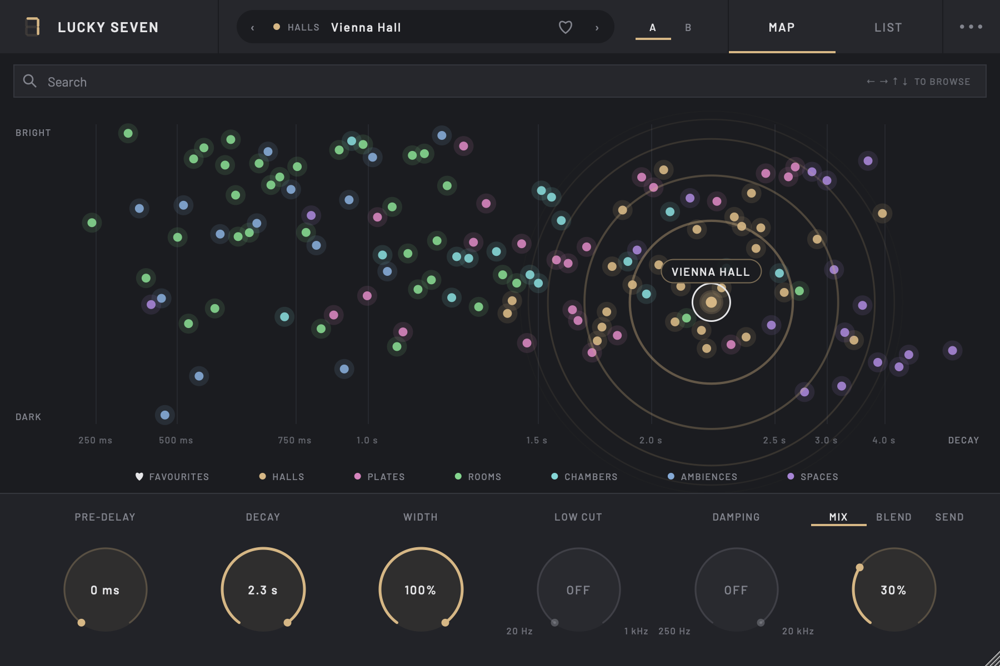

Lucky Seven
Dial in the right reverb, fast.
Browse reverbs on a map, from bright to dark and short to long, instead of scrolling a list of names. Then shape the decay, width and tone, and blend it in.
Works with Samplicity's free Bricasti M7 captures, downloaded in one click, and any impulse-response library.